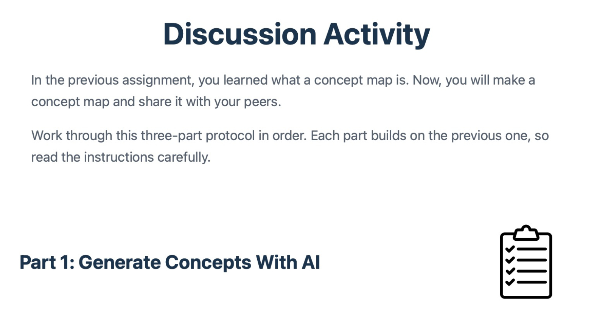

Introducing Concept Maps
Interactive micro-course
These e-learning products introduced about 35 graduate students to concept mapping. The micro-course begins with a rationale for learning and a statement of outcomes. Then examples, non-examples, and interactive online activities are used to help learners recognize and describe concept maps when they see them. A complementary activity used generative AI to scaffold the development of lists of concepts and propositions, and ultimately to generate a first draft of a concept map. A final, independent assignment assessed students’ ability to apply these skills. The independent assignment is shown on the Capstone Project page.
Interactive micro-course

Guided concept-mapping activity